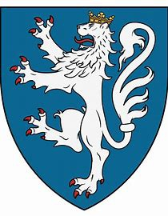

511003094 Greve Albrecht VI Albrechtsen von Eberstein til Örnhuvud
Greve, Riddare. Blev ca 79 år.

Född:
omkring 1270 Randers, Danmark. [1]
Död:
1349 Viborg, Danmark. [1]
Barn:
Personhistoria
1270?
Födelse omkring 1270 Randers, Danmark
[1]
1349
Död 1349 Viborg, Danmark
[1]
Källor